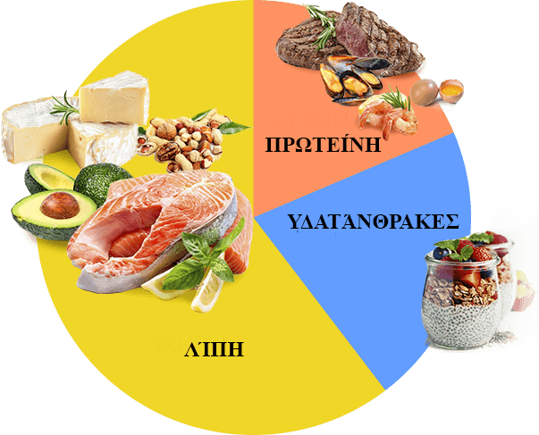

Η κέτωση είναι παραγωγή ενέργειας από τα λίπη αντί την γλυκόζη, η οποία εσέρχεται στον οργανισμό με τις υδατάνθρακες. Οπότε το σώμα μας σταματάει να παράγει την ενέργεια από τις υδατάνθρακες, τότε μετά από τις 7-14 ημέρες ο οργανισμός μας εισέρχεται σε κατάσταση της κέτωσης. Λόγω της οποίας ξεκινάει ο ενεργός μετασχηματισμός των λίπων στην ενέργεια.
Ωστόσο μια τέτοια διατροφή που συνεπάγεται με τον αποκλεισμό των υδατανθράκων είναι πάντως πολύ δύσκολη.
Μαζί με το KETO DIET μπορείς να ξεκινήσεις την διαδικασία της κέτωσης χωρίς να χρειάζεσαι να βασανίζεις τον οραγισμό σου. Το σύμπλεγμα αυτό θα εξασφαλίσει την παροχή των κετονών από την εξωτερική πηγή, ταυτόχρονα βοηθώντας εσένα να απαλλαγείς από το υπερβολικό σου λίπος.


«Όσο θυμάμαι τον εαυτό μου - μια ζωή είμαι σε μια δίαιτα. Πείνα, προβλάματα με τον ύπνο και το δέρμα –αυτά ήταν τα προβλήματά μου. Έχασα βάρος πολλές φορές ενώ επέστρεφε κάθε φορά καιαπό αρχή τα ίδια και τα ίδια. Σχετικά με το KETO DIET έμαθα από τον διατροφολόγο μου. Και το αποτέλεσμα της χρήσης αυτού του προϊόντος με έκανε πάρα πολλή ευχαριστημένη σχεδόν αμέσως. Κάθε εβδομάδα έχασα περίπου 3 κιλά. Για μένα ήταν ένα θαύμα. Ένιωσα μια χαρά όλη την περίοδο της δίαιτας και δεν πεινούσα, και εξάλλου κοιμόμουνα επί 7 ώρες χωρίς κανένα πρόβλημα».
Ελληνίδα Ελένη, 27 ετών

«Για μένα, το KETO DIET έγινε η σωτηρία μου. Ποτέ πριν δεν σκεφτόμουνα πως μπορώ να τρώω όσα θέλω και να χάνω το υπερβολικό μου βάρος ταυτόχρονα. Και εγώ πάντα είχα την περίσσεια υδατανθράκων στη διατροφή μου. Ως αποτέλεσμα είχα 100 κιλά υπερβολικού βάρους στην ηλικία των 29. Γενικά, οπότε είχα μειώσει την ποσότητα των υδατανθράκων που καταναλώνω, άρχισα να χάνω το υπερβολικό μου βάρος. Και εγώ δεν μπορώ να ζήσω χωρίς υδατάνθρακες, γιατί αγαπάω πολύ το φαστ φουντ. Λίγο αργότερα έμαθα για το KETO DIET. Και με αυτό το προϊόν η διαδικασία καψίματος του λίπους πήγε πολύ πιο γρήγορα και δεν έπρεπε να περιορίσω στην διτρφή μου την ποσότητα των υδατανθράκων. Συνολικά σε 4 μήνες είχα χάσει τα 25 κιλά! Το KETO DIET είναι ένα θαυμασιο προϊόν! Και το συνιστώ σε όλους και όλες!»
Αλέξανδρος K, 49 ετών

Μα πόσα λίγα γνωρίζουμε πραγματικά για τον οργανισμό μας. Ούτε που έχω σκεφτεί τι σύνθετες διαδικασίες συμβαίνουν μέσα μου μέχρι που επισκέφτηκα έναν διατροφολόγο και έμαθα για την διαδιακασία της κέτωσης. Και εγώ είμαι μια τεμπέλα κοπέλλα να σας πω την αλήθεια. Δεν αντέχω ούτε τις δίαιτες ούτε το σπορ. Δηλαδή έψαχνα γενικά για κάτι εύκολο και γρήγορο. Σχετικά με το KETO DIET μπορώ να πω μόνο ένα – αξίζει να το δοκιμάσετε! Εγώ έχασα 15 κιλά καταναλώνοντας αυτό το προϊόν και τελικά έχω την τέλεια μου κορμοστασιά.
Δήμητρα, 34 ετών